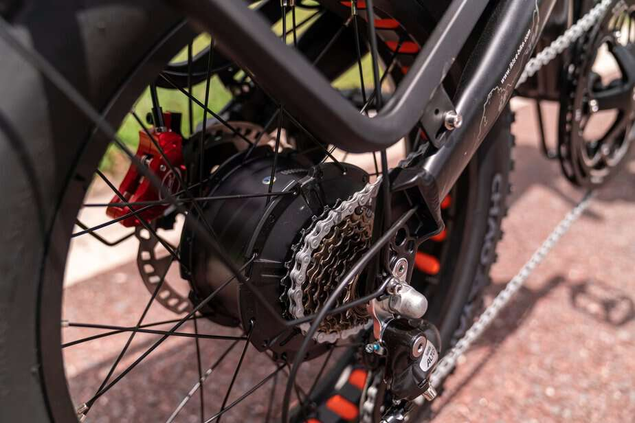
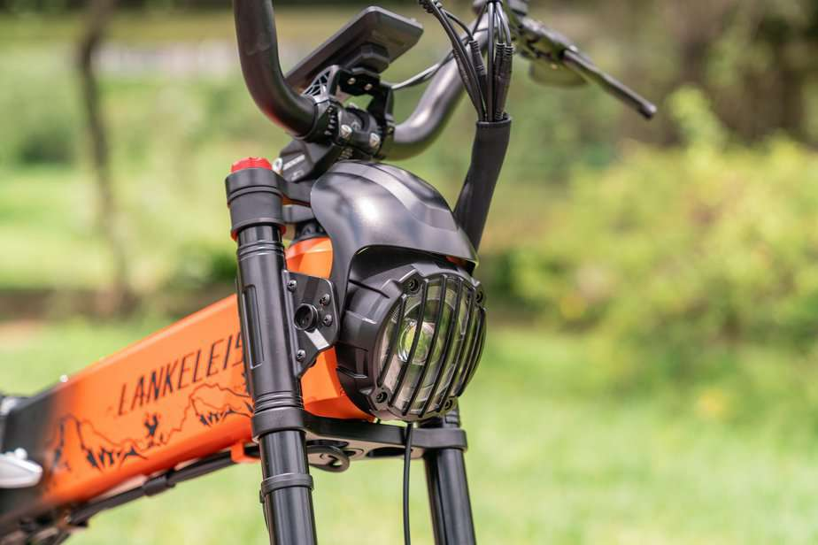
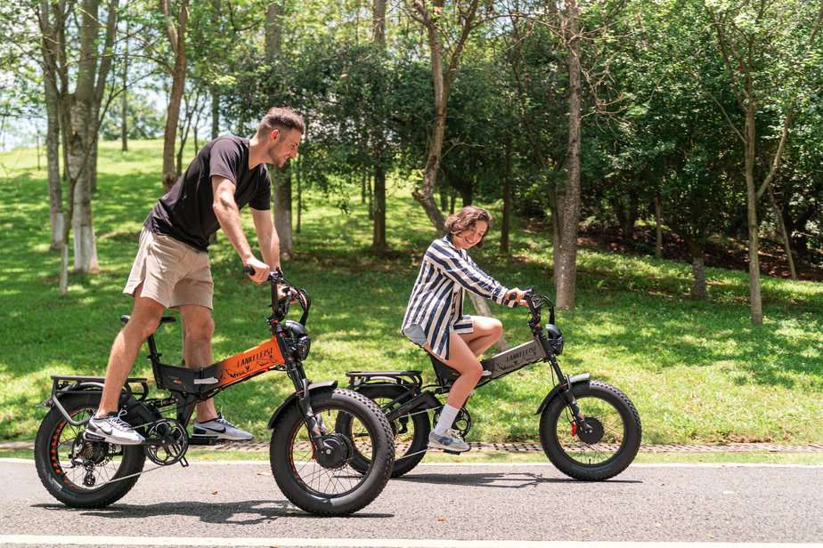

X3000 MAX Review: A Dual Motor, Fat-Tire Electric Mountain Bike for Any Terrain
The X3000 Max by Lankeleisi is an electric mountain bike with a range of impressive features and high specs across the board. Lankeleisi has been…

The X3000 Max by Lankeleisi is an electric mountain bike with a range of impressive features and high specs across the board.
Lankeleisi has been making great ebikes for a while and their current catalogue displays their expertise in technical capacity and design.
The X3000 Max is no exception. Thanks to its sturdy build and dual motor system, this electric mountain bike can handle all kinds of terrain, from the smooth tarmac of roads to the rough and tumble of a bumpy mountain path.
What’s more, it’s comfortable to ride and, since it’s foldable, it can easily be stored in the back of the car and takes up barely any space in the garage.
Let’s take a look at what makes the Lankeleisi dual motor X3000 MAX a top-notch electric mountain bike.
X3000 MAX Specifications
The 2000W Dual Motor System
The dual motors are situated on the front and back wheel hubs. The brushless design allows for a max torque of 95NM. This means it’s possible to ascend terrain on a 40-degree angle, which means you can pretty much ride this ebike anywhere except directly up a cliff face!

Impressive Range & Speed
This ebike is fitted with a Samsung Li-ion battery that provides enough charge to cover about 70km (≈43mph) without the use of the pedal assistance. Using the pedal assist, you can get up to 130km (≈80mph).
Even more impressive is the top speed this ebike can achieve: The Lankeleisi X3000 Max top speed is 51km (≈31mph) per hour.
Note: In the UK, this puts the X3000 MAX into the class of an electric motorbike and you are therefore required to be 17 and have passed a CBT course or hold a motorcycle licence to ride this ebike. If you live outside the UK, I advise you to check the rules in your country/state to find out what requirements you need to meet.

Safe and Reliable Battery
The Samsung Li-ion battery is efficient, reliable, and safe. It meets high safety standards, charges fully within 6-7 hours, and can last years.
High-Quality Parts
An under-appreciated aspect of this ebike that I really like, is the use of a Shimano 7-speed fear shift system. I’m a big fan of using Shimano parts, whether it’s for an ebike or a regular pedal bike.
I spend a fair bit of my time fixing bikes (my own and other people’s) and I always choose Shimano parts when I can. They are great quality and last longer than parts from other manufacturers. You can expect very smooth gear shifts if you choose the X3000 Max.
Price
Lankeleisi X3000 Max Price = €2,1999 (£1,899)
Who Should Ride the X3000 MAX?
Thanks to the powerful dual motor system, the Lankeleisi X3000MAX is perfect for anyone wanting to cover rough and steep terrain.
That said, this is a fast ebike that can be a real joy to ride on the road or on a mountain track.
Since it can be folded, you can easily take it on a train or pack it into the boot of your car and take it wherever you go.
It’s stylish, fun, and really high quality. If you’re looking for a new electric mountain bike, this is a great option to consider.
